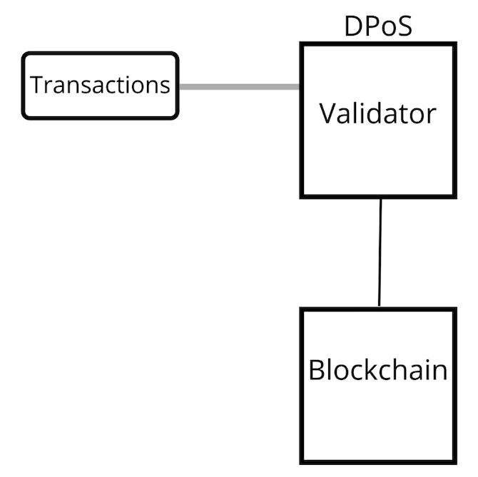
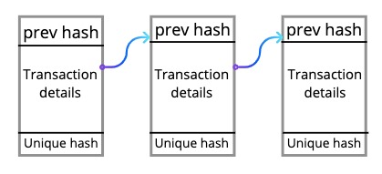
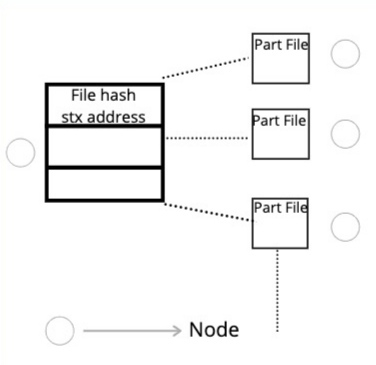

TruCoin
Authors :
Romit karmakar
romit@triunits.com
Rishav Raj Kumar
rishav@triunits.com
Ramiz Mollah
ramiz@triunits.com
Abstract.
Monetary exchange of virtual cash and any other form of data transfer without any trusted third party financial institution. Authentication of each transaction shall be provided with the help of digital signatures. The list of all verified transactions shall be available in public for everyone to see. The more common proof of work method has been replaced by the Delegated Proof of Stakes method where one doesn’t need to have a high end computing device to muscle through the hashes. In this Proof of Stakes method anyone can add stakes and participate in mining of blocks and henceforth verify it. It also provides a decentralised storage facility where any node can opt to adhere to it. Thus, with the help of this technology users can have endless possibilities when it comes to using a decentralised storage facility.
Introduction
Decentralised currency is the solution to the current problem of mediary fund transfer i.e transactions which are done by a financial institution as the medium. This increases the cost of money/data transfer even for any casual case of money/data transferring. We propose the blockchain technology to decentralise and remove any third party for this purpose so that money/data transfer shall take place directly. We propose Proof of Stakes to replace the previously existing Proof of work. This will allow any user to be a miner without having to depend on high computational power.
Address
Address is the unique identification of each user. Whenever a user joins a network, it is allotted a signing key which is uniquely generated by the use of Elliptic Curve Digital Signature Algorithm. After this the user’s address is generated by double-hashing the verifying key generated from the allotted signing key. The double hashing is achieved through Passing the verifying key through SHA256 and repassing it through ripemd160.
Transactions
Transactions here does not only mean the transfer of coins from one address to the another but refers to any kind of data map to be stored in blockchain. A transaction can be created from any data transfer. The creation of transaction object makes use of various hashing technologies to its core. Each user signs the transaction to be created with its unique and private signing key to verify the transaction. A non-reversible unique hash is allotted to each transaction using a secured hashing algorithm, which acts as an identifier for each transaction created. This creation of hash takes in account of all important information from the transaction being created and hence making all those information immutable after it is verified and finally stored in blockchain (As any change in the data will lead to change of hash of the transaction and thus deeming it void). Each transaction can have multiple inputs and multiple outputs. Inputs here are some of the previous outputs that were accounted to the address that is creating the present transaction. And outputs are the location or addresses where the object is being transferred. The problem that might come in the way is multiple creation of transactions by using some already used outputs as inputs. To solve this we use the most common and trusted approach. We include the hash of the previous transaction that was created with outputs to the address creating the present transaction along with signing script of that transaction. Therefore, this approach aims to eliminate the fraud transactions to none, and thereby solving most of the problems of centralised ecosystems.
The block and blockchain
The blockchain comprises of individual blocks which includes multiple transactions. Every block has a hash, which acts as its unique identifier. Each block is connected to the previous block by storing the hash of previous block. Every block also has a unique merkle root which is based on the hashes of all the transaction it comprises of. This merkle root changes if any of the transaction inside the block is tampered and hence providing a secure storage of transaction data in the blockchain. The height of block refers to the index of block in the blockchain and its size in bytes is stored as its size. This core concept of blockchain ensures immutability of data inside it.
DPOS (Delegated Proof of Stake)
The double spending problem is solved using DPOS. To choose which nodes adds the final block to the blockchain we use the algorithm of Delegated Proof of Stake. In this system, ten super delegates are chosen who are allowed to mine and add the final block. The nodes mining the blocks is also referred to as miners. In the concept of DPOS, each node provides some amount to the provided election fund address in the form of transaction which is irreversible unless a node opts out of the election process. Then each node places a vote to some other node among the nodes standing in election. No node can vote for itself. After all the votes have been made, the top ten delegates are chosen as miners to mine and add the final block. The voting of a node is achieved through probability random selection mechanism of node from the nodes opting to stake in election.
Mining
Not the conventional process as discussed earlier but rather meant to be used by anyone or everyone. After the ten super delegates are chosen, they are allowed to mine the blockchain and add the final block. Two main steps of mining includes the verification of all the transactions in the new block to be added and full blockchain verification. These verifications aim to remove any false transactions that might have been added somewhere in blockchain, if at all.
Transaction verification
The transaction is verification means verifying if the input of this transaction is a valid output of some transaction in any block of blockchain. This scans the blockchain and finds a match for the previous transaction hash of the present transaction. The transaction verification process is however technically different for different type of transactions.
Full blockchain verification
This process is the second step in the mining process. Here the complete blockchain is traversed through and verified if the merkle root is valid, which would otherwise not be, if any data inside a block is tampered.
Reward
A reward is received by the super delegates who finally mines the blockchain and adds the new block to it. The reward is in the form of the digital currency integrated with the blockchain. This reward is automated to the super delegates till the maximum digital currency limit is reached. In this blockchain platform there is no advantage of high CPU or GPU computation since the choosing of super delegates is based on random probability algorithm. This hence adds a reason for the rising of more and more nodes or servers of this blockchain and hence making a completely decentralised environment.
51% consensus
This concept is based on the fact that any decision would be valid if 51% consensus is reached. Therefore the most important requirement is that true nodes form the majority of the blockchain for its proper and visioned functioning rather than deviating and moving off track. This consensus is more specifically used during data sync between different nodes in the network and when the block mined by all ten super delegates is not the same.
Network
- Each node in the network is on direct sync and communication with each other.
- RPC forms an important process in each node which is to communicate with external applications like explorer or wallet.
- Each node has multiple processes listening/broadcasting simultaneously for its proper functioning.
- If a node receives a transaction, it stores in its own memory pool and the broadcast it to all other nodes, so that there are same transactions in every one’s memory pool.
- A node communicates with other nodes using UDP and TCP protocols.
- Each new block that miners/super-delegates add to the blockchain after mining is completed.
- The receiver nodes or non super-delegates receives all blocks and adds the most common block to its local blockchain (by 51% consensus).
- The difference in blockchains of different nodes, if at all is removed via blockchain sync with 51% consensus system.
Hence, this forms a highly synced network with high speed unbarred communication between each node. Since all processes run simultaneously on each node, a process is not affected by other processes running on that node.
Proposal for Trucoin upgrades
Being open source, all the proposals for trucoin would also be decided by 51% consensus, i.e., a proposal would be integrated and remain valid as soon as it is accepted by majority of the nodes in the network.
Storage
Privacy
The conventional way involves trusted third parties as intermediaries while a transaction is taking place, but here this privacy is maintained by publicising all the transactions taking place without information linking the transaction to anyone. A new key pair is used for every transaction to provide anonymity to the owner of a key, linking could reveal other transactions that belonged to that particular owner. The storage facility that we provide is a decentralised facility which ensures absolute privacy to the users who upload file using that thread.
Conclusion
Trucoin thus provides a vast platform for decentralised usage, tailored for tomorrow. This blockchain has its own digital currency as referred to by the name trucoin itself. There would not be any more need to rely on any kind of central authority for creating any kind of transaction. And as mentioned above this transaction just refers to transfer of any kind of data between two individuals. Digital currency and storing files securely are the most common usage. The possibilities of trucoin is endless. Almost any application can turn decentralised on integrating it with the blockchain. Trucoin would aim to solve most of the real life problems of by eliminating the factor of trust on any kind communication. The data immutability is the most important and core strength of any blockchain based technology. This would therefore power organisations or individuals to get away with the fear of data breach. The only requirement Trucoin would need is majority of honest nodes controlling the network through 51% consensus.
References
- W. Dai, “b-money,” http://www.weidai.com/bmoney.txt, 1998.
- Bitcoin: A Peer-to-Peer Electronic Cash System, Satoshi Nakamoto.
- Ripple Whitepaper
- Daniel Larimer’s proof of stakes in bitshares
- R.C. Merkle, “Protocols for public key cryptosystems,” In Proc. 1980 Symposium on Security and Privacy, IEEE Computer Society, pages 122-133, April 1980.